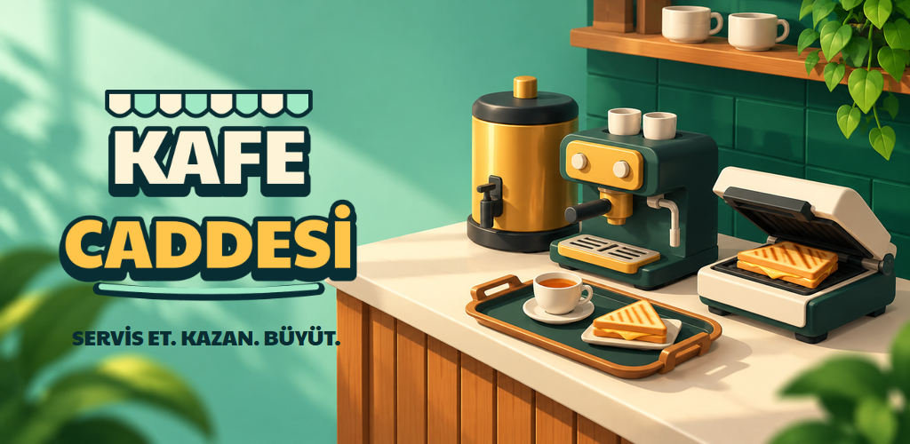
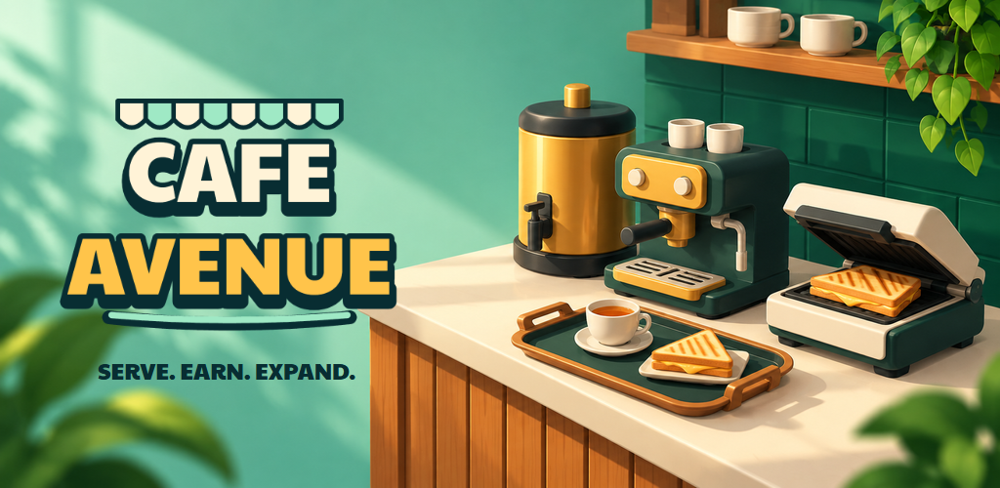

Türkçe mağaza seti
Kafe Caddesi: İşletme Oyunu
Kahve hazırla, masalara servis yap ve kendi kafe işletmeni büyüt
Mağaza metinleri · JSON + alt text

1024 × 500 · Tanıtım çizimi; oynanış ekranı değildir.
Altı gerçek oynanış anı
Logo
English store set
Cafe Avenue: Idle Tycoon
Run a coffee shop, serve customers and grow your team in a hands-on cafe game
Listing copy · JSON + alt text

1024 × 500 · Cover illustration, not a gameplay screenshot.
Six moments of real gameplay
Wordmark
Ortak ikon ve renkler
Google Play ikonu · 512 × 512 · 1024 px ana dosya · Küçük boyut kontrolü
Değerlendirme notları
14 isim çifti ve 10 rakip incelendi. Cafe Avenue / Kafe Caddesi, ürün uyumu ve anlaşılır kategori ifadesi için seçildi. Arama hacmi ve gerçek mağaza dönüşümü ölçülmedi; ASO sonucu veya marka hakkı garantisi değildir.
Mevcut karakterlerin dağıtım lisansı proje kaydında doğrulanmamış durumda. Gerçek ekranlar bu karakterleri içerir. Teknik olarak hazırlanan bu dosyaların yayımlanması için hak durumunun çözülmesi gerekir.